ДЕПАРТАМЕНТ СТРОИТЕЛЬСТВА
НАУЧНО-ТЕХНИЧЕСКОЕ УПРАВЛЕНИЕ
МОССТРОЙЛИЦЕНЗИЯ
ВЕДОМСТВЕННЫЕ СТРОИТЕЛЬНЫЕ НОРМЫ
ИНСТРУКЦИЯ
ПО СТРОИТЕЛЬСТВУ ПОЛНОСБОРНЫХ
ПОКРЫТИЙ ГОРОДСКИХ ДОРОГ
ВСН 1-94
Москва - 1996
Инструкция по строительству полносборных покрытий городских дорог (взамен ВСН 50-79) разработана кандидатами технических наук В. М. Гольдиным, Л. В. Городецким, Р. И. Бега (НИИМосстрой) с участием Мосстройлицензии (Ю. И. Столяров и к. т. н. В. Д. Фельдман).
Инструкция обобщает накопленный за период с 1979 по 1994 гг. опыт службы дорожных одежд на эксплуатируемых улицах и дорогах.
Инструкция составлена с учетом новых ГОСТ на плиты железобетонные для покрытий городских дорог, тротуарных плит и на камни бортовые бетонные и железобетонные, разработанных НИИМоссстроем, Мосинжпроектом и Академией коммунального хозяйства.
Инструкция согласована с институтом Мосинжпроект, трестом Гордорстрой, Техническим управлением муниципального предприятия Мосинжстрой.
|
Департамент строительства |
Ведомственные строительные нормы |
ВСН 1-94 Взамен «Инструкции по строительству покрытий городских
дорог» |
|
Научно-техническое управление |
Инструкция по строительству полносборных покрытий городских дорог |
1.1. Настоящая инструкция распространяется на строительство в летний и зимний периоды в Москве сборных покрытий временных и постоянных дорог и проездов, площадей, тротуаров, садово-парковых, пешеходных дорожек и хозяйственных площадок. При строительстве полносборных покрытий применяют следующие конструктивные элементы, выпускаемые промышленностью:
- плиты для покрытий дорог;
- плиты для покрытий тротуаров;
- камни бетонные и железобетонные, гранитные;
- оголовки смотровых колодцев.
1.2. Согласно ГОСТ 21924.0-84 - ГОСТ 21924-3.84 плиты железобетонные для покрытий городских дорог подразделяются на типы в зависимости:
от назначения:
- для постоянных дорог;
- для временных дорог;
от конфигурации:
П- прямоугольная;
ПБ - прямоугольная с одним совмещенным бортом;
ПББ - прямоугольная с двумя совмещенными бортами;
ПТ - трапецеидальная;
ПШ - шестиугольная;
ПШД - шестиугольная осевая диагональная;
ПШП - шестиугольная осевая поперечная;
ДПШ - диагональная, половина шестиугольной плиты;
ППШ - поперечная половина шестиугольной плиты.
Форма и основные размеры плит должны соответствовать указанным в ГОСТах чертежах.
|
Внесены НИИМосстроем |
УТВЕРЖДЕНЫ Научно-техническим управлением Департамента строительства «1» августа 1994 г. |
Дата введения в действие 1 января 1995 г. |
1.3. Согласно ГОСТ 17608-91 плиты тротуарные подразделяются на квадратные (К), прямоугольные (П), шестиугольные (Ш), фигурные (Ф) и элементы декоративные дорожные (ЭДД).
1.4. Согласно ГОСТ 6665-91 бетонные и железобетонные бортовые камни подразделяются на следующие типы:
БР - прямые рядовые;
БУ - прямые с уширением;
БУП - прямые с прерывистым уширением;
БЛ - прямые с лотком;
БВ - въездные;
БК - криволинейные.
Согласно ГОСТ 6666-91 гранитные камни подразделяются на прямоугольные (ГП) и криволинейные (ГК).
1.5. Опытная партия регулируемых оголовков смотровых колодцев начнет выпускаться в 1995 году.
1.6. Рекомендуемые сборные элементы предназначены для строительства постоянных и временных дорог и проездов с шириной проезжей части, кратной 3,5 м, и числом полос движения, обусловленным категорией дороги.
1.7. Строительство полносборных покрытий постоянных городских дорог осуществляют в следующей последовательности:
- устройство земляного полотна;
- установка оголовков смотровых колодцев;
- распределение, планировка и уплотнение подстилающего слоя и основания;
- распределение технологического слоя;
- монтаж дорожного покрытия;
- вибропосадка плит;
- установка бортового камня;
- монтаж покрытия тротуаров;
- заполнение швов.
1.8. При строительстве покрытий временных дорог вибропосадка плит, установка бортового камня и заделка швов не производится.
1.9. Строительство полносборных покрытий постоянных и временных дорог ведется поточным методом, предусматривающим равномерное и непрерывное производство всех дорожно-строительных работ.
2.1. Работы по устройству земляного полотна производят после окончания работ по вертикальной планировке, устройству дренажей и водостоков, прокладке новых и перекладке старых подземных инженерных сетей, засыпке траншей и разрытии с послойным уплотнением.
2.2. Отсыпку, разравнивание и уплотнение насыпи земляного полотна следует производить преимущественно в летнее время в соответствии со СНиП П-60-90.
2.3. На участках, подверженных пучинообразованию, при неблагоприятных гидрологических условиях следует предусматривать специальные меры для предупреждения пучинообразования.
2.4. Работы по устройству земляного полотна целесообразно производить экскаваторами с ковшом емкостью от 0,25 м3 до 1,0 м3 (ЭО-2621В-3; ЭО-2626; ЭО-3123; ЭО-3323А; ЭО-4225; ЭО-5124), бульдозерами мощностью 80 - 250 л. с. (ДЗ-42; ДЗ-190; ДЗ-162-1), автогрейдерами среднего и тяжелого типа (ДЗ-122Б; ДЗ-98В.1; ДЗ-180).
2.5. Насыпи, как правило, должны возводиться из талого песчаного и супесчаного грунта. С целью более полного использования местного грунта допускается отсыпка насыпи из смеси талого песчаного и мерзлого грунтов с обязательным уплотнением до наступления смерзания грунта. Отсыпка верхних слоев насыпей высотой 0,8 - 1,5 м производится только из талого грунта при влажности, близкой к оптимальной.
2.6. Глинистые (водонепроницаемые) грунты могут применяться только в непереувлажненном состоянии. Пылеватые грунты допускается применять только в нижней части насыпи. Верхняя часть насыпи в этом случае (не менее 0,5 м) отсыпается из песчаных и супесчаных грунтов.
2.7. При устройстве насыпи следует соблюдать следующие правила производства работ:
- грунт отсыпают слоями равной толщины в зависимости от вида средств уплотнения;
- каждому слою грунта после планировки и разравнивания придается поперечный уклон 10 - 20 % от оси дороги;
- уплотнение следует производить при влажности, близкой к оптимальной;
- особое внимание следует обращать на равномерность уплотнения грунта.
2.8. Особенно тщательно следует уплотнять грунт около дождеприемных колодцев, колодцев подземной сети, в местах примыкания к инженерным сооружениям.
2.9. Уплотнение грунта в стесненных условиях следует производить малогабаритными механизмами (приложение 1).
2.10. При устройстве дорожного корыта его глубина должна соответствовать проекту с допусками ± 3 см. Ширина корыта с учетом установки бортовых камней должна быть больше ширины покрытия на 0,5 м.
2.11. Послойное уплотнение рекомендуется производить:
- при связных грунтах - укаткой, трамбованием, вибротрамбованием, комбинированным способом;
- при малосвязных грунтах - укаткой, трамбованием, вибротрамбованием, вибрированием, комбинированным способом;
- при несвязных грунтах - вибротрамбованием и вибрированием.
2.12. При отрицательных температурах уплотнение грунта производят трамбующими, вибротрамбующими, вибрационными машинами и виброплитами тяжелого типа.
2.13. Поверхность земляного полотна планируют так, чтобы величина просвета при прикладывании 3-метровой рейки не превышала 1 см.
2.14. Плотность грунта земляного полотна, а также грунта засыпанных траншей, разрытий, котлованов должна быть не менее 0,98. В процессе уплотнения систематически контролируют влажность и плотность грунта.
2.15. Степень уплотнения грунта устанавливают путем взятия проб грунта с ненарушенной структурой и определения объемной массы скелета грунта в лаборатории по методу стандартного уплотнения; используют также плотномер-влагомер Ковалева; для песчаных и супесчаных грунтов применяют ударник СоюздорНИИ.
2.16. Возведение насыпей в зимнее время допускается при наличии необходимого количества уплотняющих средств, обеспечивающих быстрое уплотнение отсыпанного грунта до требуемого значения плотности. В табл. 2.1.1 указаны условия применения грунтов в насыпях, возводимых в зимнее время.
Условия применения грунтов в насыпях, возводимых в зимнее время
|
Вид грунта |
Условия применения |
Допускаемая высота насыпи, м |
|
Скальный, крупноблочный, крупный и средней крупности песок |
Без ограничений |
Без ограничений |
|
Глинистый |
Допускается с влажностью не более 1,1 от оптимальной |
В зависимости от климата района: суровый - 2,5; холодный - 3,5; умеренный - 4,5; теплый - не ограничивают |
|
Мелкий и пылеватый, неводонасыщенные пески |
Допускается при влажности не более 1,2 - 1,3 от оптимальной |
То же |
|
Жирные глины, меловые, тальковые и трепельные грунты, а также грунты с высокой влажностью |
Применять запрещается |
|
2.17. Насыпи, как правило, должны возводиться только из талого грунта с обязательным уплотнением до наступления смерзания насыпного грунта. Ввиду трудностей выдержать это требование в течение всего зимнего периода, допускается отсыпка высоких (более 1,5 м) насыпей из смеси талого и мерзлого грунтов (табл. 2.1.2).
Таблица 2.1.2.
Рекомендуемая высота насыпи при производстве работ в зимнее время
|
Средняя температура воздуха за период производства работ по отсыпке насыпей, град |
- 5 |
- 10 |
- 15 |
- 20 |
|
Рекомендуемая высота насыпи, м |
не ограничена |
4,5 |
3,5 |
2,5 |
Насыпи высотой менее 1,5 м должны возводиться из талых грунтов при влажности, близкой к оптимальной.
2.18. Содержание мерзлого грунта в насыпи допускается до 20 % с размером комьев не более 15 см при уплотнении катками весом 25 - 40 т на пневматических шинах и с размером комьев до 20 см при уплотнении трамбующими машинами, катками с падающими грузами.
2.19. Отсыпку насыпи следует производить слоями с уклоном 2 - 3 % на всю ширину с обеспечением стока воды с поверхности земляного полотна (в случае, если строительство основания дороги будет осуществляться весной) и возможности механизированной очистки от снега.
2.20. Отсыпанный грунт сразу же разравнивается бульдозерами толщиной слоя, не превышающей возможности уплотняющих машин.
2.21. Длина участков отсыпаемых насыпей и уплотняющие средства должны быть выбраны так, чтобы окончательное уплотнение грунта в насыпи заканчивалось не позднее 3 часов при температуре воздуха до - 10 °С и не позднее 2 часов до - 20 °С после выемки грунта в резерве или грунтовом карьере (табл. 2.1.3).
Время уплотнения грунта в насыпи
|
Температура наружного воздуха, град |
- 5 |
- 10 |
- 20 |
- 30 |
|
Время начала смерзания грунта, мин |
90 - 120 |
60 - 90 |
40 - 60 |
20 - 30 |
2.22. Уплотнение грунтов в насыпях должно осуществляться до достижения коэффициента уплотнения не менее 0,98, для чего верхние слои насыпи толщиной 1,5 м должны отсыпаться из талых грунтов.
2.23. Катки для уплотнения грунта выбирают в зависимости от вида грунта и толщины слоя в соответствии с табл. 2.1.4.
2.24. Уплотнение грунта прицепными катками выполняется круговыми проходами по рабочей захватке. Укатка производится от краев насыпи к ее середине с перекрытием смежных полос уплотнения по 0,15 - 0,25 м. Для предотвращения обрушения откосов кромка вальца не должна быть ближе 0,3 м от бровки отсыпаемого слоя. Укатку самоходными катками следует производить по челночной схеме.
2.25. Работы по возведению земляного полотна должны непрерывно контролироваться лабораторией, для чего непосредственно на месте работ организуются специальные контрольные посты.
Катки для уплотнения грунта
|
Марка машины |
Тип машины |
Масса, т |
Глубина уплотнения (в плотном теле), м |
|
|
связный грунт |
несвязный грунт |
|||
|
ДУ-65 |
Самоходный пневмоколесный на спецшасси, статический |
10 - 12 |
0,20 |
0,25 |
|
ДУ-64 |
Самоходный комбинированный с вибрационным вальцом |
8,5 - 9,5 |
0,30 |
0,50 |
|
ДУ-58А |
16 |
0,40 |
0,60 |
|
|
ДУ-71 |
17 - 25 |
0,50 |
0.60 |
|
|
ДУ-70 |
Прицепной к трактору Т-150 и вибрационный |
6,5 - 7 |
0,25 |
0,40 |
|
КО-2 |
12 |
0,30 |
0,50 |
|
2.26. В задачу контрольных постов входит следующее:
а) непрерывный контроль за влажностью и плотностью грунтов, укладываемых в насыпь;
б) определение режима работ уплотняющих машин (толщина уплотняемого слоя и число проходов);
в) осуществление контроля за качеством уплотнения грунтов путем наблюдения за точным выполнением определенного режима работы машин и испытания плотности не менее трех образцов грунта на каждые 200 м насыпи;
г) количество мерзлого грунта не должно превышать пределов, указанных в п. 2.18, контрольные пробы отбирают до уплотнения грунта на каждые 200 - 300 м3.
2.27. Взятие проб для определения объемного веса мерзлого грунта следует производить путем вырубки монолитов объемом не менее 300 см3, а в случае грунтовой смеси или талого грунта целесообразно применять стальные цилиндры объемом около 2 - 3 л.
2.28. В конце зимы, когда уже намечаются оттепели, земляное полотно следует тщательно очистить от снега и льда. Во время таяния снега необходимо обеспечить непрерывный и беспрепятственный сток воды.
2.29. Отвод воды, поступающей к подстилающему слою, производится продольными и поперечными дренами, выполненными из трубофильтров.
Работы по устройству трубчатого дренажа выполняются непосредственно перед распределением подстилающего песчаного слоя.
2.30. Траншеи под трубчатый дренаж следует отрывать до наступления заморозков при помощи автогрейдера ДЗ-180А с навесным оборудованием или при помощи экскаватора ЭО-2621В-3 с трапецеидальным ковшом. Укладка труб в траншею производится вручную или при помощи автокранов.
2.31. Технологический процесс устройства дренажей мелкого заложения включает: рытье ровика; устройство в нем подушки под трубы; укладку труб с фильтрами; сопряжение трубчатых дрен с водоприемниками; заполнение ровика песком и его уплотнение. Трубы с раструбами или трубофильтры обращают против уклона раструбами и пазами.
Особое внимание должно уделяться уплотнению дна ровика.
2.32. В процессе устройства дренажей мелкого заложения проверяют: уклон подушки; качество фильтров отсыпок; плотность соединения звеньев труб в стыках, в том числе трубофильтров с полимерными муфтами; гранулометрический состав и коэффициент фильтрации; толщину слоя песка; влажность и степень увлажнения песка.
2.33. Для устройства дренажей эффективно применение геотекстиля. Геотекстиль-дорнит поставляют, как правило, в рулонах массой до 80 кг с длиной полотна в рулоне не менее 40 м и шириной не менее 1,5 м. Дорнит может применяться как противозаплывающий материал в дренаже мелкого заложения, так и в совмещенной конструкции дренирующего слоя и дренажа мелкого заложения.
2.34. Устройство подстилающего слоя производят после приемки земляного полотна и оформления соответствующего акта. Подлежат обязательной проверке соответствие отметок профилей проектным и степень уплотнения грунта.
2.35. Толщина подстилающего слоя назначается в зависимости от вида грунта и должна соответствовать проекту (отклонения по толщине слоя допускаются не более 1 см).
2.36. Пески или песчано-гравийные смеси, применяемые для подстилающего слоя, должны иметь коэффициент фильтрации не менее 3 м/сут, содержание мелкозема не выше 7 %, а пылевидных и глинистых частиц не более 5 % по массе.
2.37. Коэффициент уплотнения подстилающего слоя должен быть не менее 0,98, а наибольший просвет под 3-метровой рейкой - 1 см.
2.38. Для предотвращения смерзания песка в зимнее время рекомендуется его пропитка 2-процентным раствором хлористого кальция (CaCl2).
Необходимо количество CaCl2 на 1 м2 поверхности слоя приведено в табл. 2.1.5.
Таблица 2.1.5.
|
Содержание безводного CaCl2 в 1 л раствора, % |
Глубина пропитки, см |
Количество CaCl2, кг/м2 |
|
2 |
15 |
5 |
|
2 |
30 |
10 |
2.39. Песок или песчано-гравийная смесь доставляются в подготовленное корыто автосамосвалами. Разравнивание производят автогрейдером или бульдозером слоями не более 20 см (при оптимальной влажности), уплотнение - моторными катками типа ДУ-58А. При больших объемах работ подстилающий слой устраивают с помощью профилировщика типа ДС-178.
2.40. В зимнее время работы по устройству основания следует производить без перерыва во времени после устройства подстилающего слоя.
2.41. Сборные покрытия городских дорог и тротуаров устраивают на основаниях из:
- щебня (гравия, шлака);
- цементно-песчаной смеси;
- песка;
- тощего бетона.
2.42. Основания из щебня крупностью до 70 мм устраивают распределителем щебня и гравия СД-406.
2.43. Уплотнение щебеночного основания производят моторными катками статического и вибрационного действия.
Проверку плотности основания производят тяжелым катком, проход которого не должен оставлять на уплотненной поверхности щебня следов от вальцов.
2.44. В зимнее время доставку материала основания производят автомобилями-самосвалами с утепленными кузовами.
2.45. Устройство покрытия по щебеночному или песчаному основанию в зимних условиях производится сразу же после его уплотнения или весной после его оттаивания и доуплотнения.
2.46. Устройство оснований внутриквартальных проездов из цементно-песчаной смеси и тощего бетона производят только в период с апреля по ноябрь с помощью бетоноукладчика ДС-169 с профилировщиком ДС-178.
При небольшой ширине тротуаров основания под тротуары допускается устраивать вручную и уплотнять их виброрейками и виброплощадками.
2.47. Основание из цементно-песчаной смеси устраивают:
а) однослойным из сухой смеси, толщиной 10 - 12 см, из которых верхний слой толщиной 3 - 5 см не уплотняют. Смешивание песка с цементом производится в заводских условиях при естественной влажности песка 5 - 6 %, расход цемента марки 400 должен быть не менее 150 кг/м3. Плиты укладывают сразу после планировки смеси;
б) двухслойным, нижний слой толщиной 7 см из увлажненной цементно-песчаной смеси, а верхний - технологический слой толщиной 3 - 5 см из неуплотненной сухой смеси.
Покрытия из плит устраивают спустя 7 дней после укладки увлажненной цементно-песчаной смеси по свежеуложенной неуплотненной сухой смеси толщиной 3 - 5 см.
2.48. Укладку цементно-песчаной смеси для постоянных дорог в зимних условиях рекомендуется производить при температуре наружного воздуха не ниже - 15 °С.
2.49. Устройство основания из тощего бетона производится бетоноукладочными машинами, укладчиками щебня и профилировщиками типа «Супер» 200 и 204 фирмы «Фёгеле». При устройстве оснований под тротуары укладку бетона производят экскаватором ЭО-2621 В-3 с навесным оборудованием.
2.50. Толщина распределяемого слоя должна быть на 15 - 20 % больше толщины проектного слоя и уточняться по ходу работ.
2.51. Уплотнение смеси производится моторными катками. Укатка производится сначала легкими катками статического действия весом 5 - 6 т или виброкатком весом 3,5 т, а затем тяжелыми весом 10 - 15 т и до полного уплотнения с перекрытием следа на 15 - 25 см. Уплотнение бетонной смеси в один слой разрешается при толщине готового основания до 20 см. При использовании укладчика типа «Супер» 200 и 204 фирмы «Фёгеле» уплотнение тощего бетона катками не производится.
3.1.1. Железобетонные плиты для сборных покрытий следует изготовлять из тяжелого бетона средней плотности более 2200 до 2500 кг/м3 включительно, классов по прочности на сжатие и марок по прочности на растяжение при изгибе, указанных в ГОСТ 21924.1-84 и ГОСТ 21924.2-84. Марки бетона по морозостойкости и водонепроницаемости принимают для плит, предназначенных для постоянных дорог - Мрз 150 и W4, а для плит временных дорог - Мрз 75 и W2.
3.1.2. Плиты должны иметь правильную геометрическую форму, ровную, чистую, шероховатую рабочую поверхность, обеспечивающую величину коэффициента сцепления не менее 0,5.
3.1.3. Отклонения от проектных размеров не должны превышать:
- по длине и ширине ± 5 мм,
- по толщине ± 5 мм.
3.1.4. Плиты должны иметь монтажные устройства.
3.1.5. На плитах не допускаются:
поверхностные трещины, расслоение бетона, обнажение арматуры, местные разрушения бетона, вмятины и раковины глубиной более 3 мм.
3.1.6. Типоразмеры дорожных плит приведены в табл. 3.1.1 и на рис. 3.1.1; 3.1.2; 3.1.3; 3.1.4; 3.1.5. Схемы раскладки плит на прямых участках и поворотах временных дорог на рис. 3.1.6; поперечные разрезы при различной ширине проезжей части и конструкции из плит показаны на рис. 3.1.7, 3.1.8.
3.2.1. Покрытия постоянных и временных дорог устраивают из плит железобетонных с ненапрягаемой арматурой и плит железобетонных с предварительно-напряженной арматурой, рассчитанных под автомобильную нагрузку Н-30 и Н-10.
3.2.2. Временные внутриквартальные проезды устраивают в течение всего года из железобетонных плит, как правило, по трассам постоянных проездов.
3.2.3. Временные дороги, уложенные по трассам постоянных проездов из плит на последней стадии их оборачиваемости после исправления продольного и поперечного профиля, следует использовать как основание постоянных проездов.
Типоразмеры дорожных плит
|
Типоразмер плиты |
Размеры плит, мм |
Масса плиты (справочная), т |
||||||||
|
L |
B B/C |
Толщина плиты h (h1) |
l1 |
l2 l2/l3 |
b1 |
b2 (b3) |
a6 |
|||
|
предварительно напряженной |
с ненапрягаемой арматурой |
|||||||||
|
1П60.38 |
6000 |
3750 |
140 |
- |
1200 |
3600 |
375 |
1600 |
- |
7,85 |
|
1П60.35 |
3500 |
350 |
1400 |
7,33 |
||||||
|
2П60.35 |
- |
- |
||||||||
|
1П60.30 |
3000 |
300 |
1200 |
6,28 |
||||||
|
2П60.30 |
- |
- |
||||||||
|
1П60.19 |
1870 |
375 |
1120 |
3,90 |
||||||
|
1П60.18 |
1750 |
350 |
1050 |
3,65 |
||||||
|
2П60.18 |
- |
- |
||||||||
|
1П35.28 |
3500 |
2750 |
- |
170 |
700 |
2100 |
- |
- |
- |
4,08 |
|
2П35.28 |
||||||||||
|
1П30.18 |
3000 |
1750 |
600 |
1800 |
2,20 |
|||||
|
2П30.18 |
||||||||||
|
1П18.18 |
1750 |
160 |
350 |
1050 |
1,20 |
|||||
|
2П18.18 |
||||||||||
|
1П18.15 |
1500 |
1,03 |
||||||||
|
2П18.15 |
||||||||||
|
1ПБ60.18 |
6000 |
1750 |
140 |
- |
1200 |
3600 |
350 |
1050 |
- |
4,48 |
|
1ПББ55.20 |
5500 |
2000 |
935 |
3630 |
400 |
1200 |
4,40 |
|||
|
1ПББ35.20 |
3500 |
- |
160 |
595 |
2310 |
3.38 |
||||
|
1ПТ55 |
5500 |
2000/1500 |
140 |
- |
1045 |
3300/1155 |
3,35 |
|||
|
2ПТ55 |
||||||||||
|
1ПТ35 |
3500 |
- |
170 |
665 |
2100/735 |
2,58 |
||||
|
2ПТ35 |
||||||||||
|
1ПШ13 |
2480 |
2150 |
- |
180 |
555 |
- |
370 |
- |
1240 |
1,80 |
|
1ПШД13 |
- |
180 (196) |
1,90 |
|||||||
|
1ПШП13 |
- |
180 (196) |
1,93 |
|||||||
|
1ПШ12 |
2320 |
2010 |
180 |
520 |
- |
350 |
- |
1160 |
1,58 |
|
|
1ПШД12 |
180 (195) |
1,65 |
||||||||
|
1ПШП12 |
180 (197) |
1,68 |
||||||||
|
1ДПШ13 |
2480 |
1070 |
- |
180 |
- |
- |
484 |
345 |
1240 |
0,90 |
|
1ДПШ12 |
2320 |
1000 |
452 |
325 |
1160 |
0,78 |
||||
|
1ППШ13 |
2150 |
1235 |
484 |
615 (315) |
1240 |
0,98 |
||||
|
1ППШ12 |
2010 |
1155 |
452 |
575 (325) |
1160 |
0,78 |
||||
Примечание. Масса плит приведена для бетона средней плотностью 2500 кг/м3.
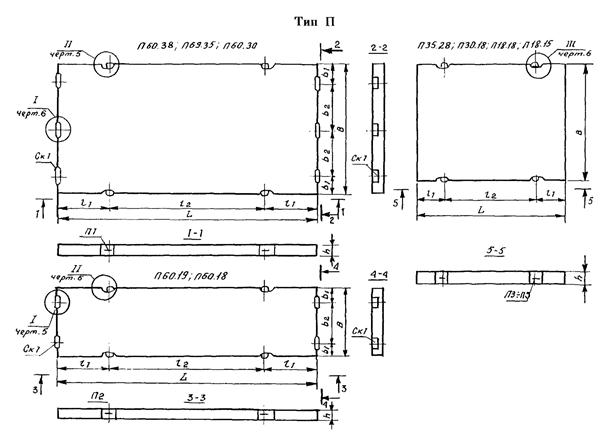
Рис. 3.1.1. Прямоугольная плита.
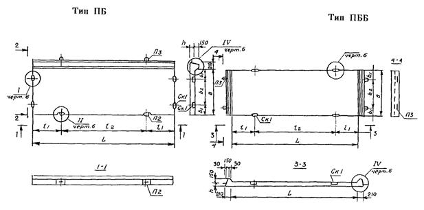
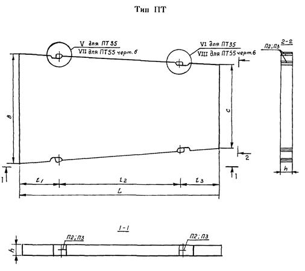
Рис. 3.1.3. Трапецеидальная плита.
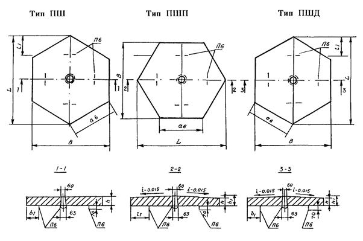
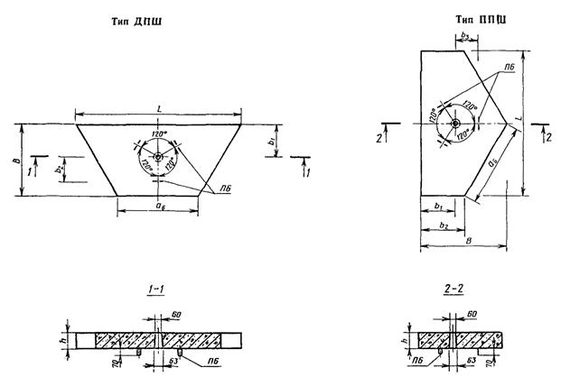
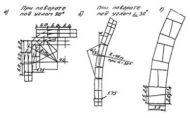
Рис. 3.1.6. Схемы раскладки плит на поворотах временных дорог:
а и б - прямоугольных плит 1ПБ60.18 (6,0×1,75);
в - трапецеидальных 1ПТ35 ( 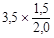
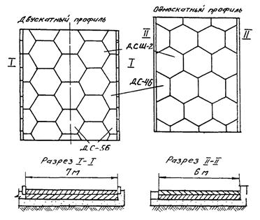
Рис. 3.1.7. Раскладка шестиугольных плит при различных профилях и ширине проезжей части:
1 - плиты; 2 - песок, стабилизированный цементом; 3 - песок.
3.2.4. При строительстве сборных постоянных городских дорог и проездов укладку плит осуществляют по неуплотненному технологическому слою толщиной 3 - 5 см.
3.2.5. Транспортировка плит на объект может осуществляться бортовыми автомобилями и автопоездами соответствующей грузоподъемности.
3.2.6. Монтаж плит производят с помощью четырехветвевого стропа самоходными кранами, характеристики которых даны в приложении 2.
3.2.7. Монтаж покрытия рекомендуется вести «с колес» без промежуточного складирования плит на объекте. Складируют плиты при необходимости вдоль дороги на спланированные площадки в штабеля по 7 - 8 штук с таким расчетом, чтобы обеспечить минимальное число изменений положения крана при монтаже покрытия.
3.2.8. Автомобильные и пневмоколесные краны укладывают плиты с готового покрытия способом «от себя»; гусеничные краны для предотвращения повреждений плит должны работать, как правило, с грунта. Автомобиль с плитами устанавливают так, чтобы угол поворота стрелы крана при монтаже был минимальным. На рис. 3.2.1 показана укладка плит двумя кранами в одном потоке.
3.2.9. Укладку плит производят в зависимости от ширины проезжей части. При двухскатном профиле монтаж ведется от оси дороги к ее краям. При односкатном профиле монтаж ведется поперечными рядами от края до края. Разбивка продольной оси дороги и осей рядов плит производится теодолитом.
3.2.10. Плиты укладывают так, чтобы они имели контакт с основанием по всей своей площади. Перекосы при опускании плит недопустимы.
3.2.11. Грани плит выравнивают по натянутому шнуру, расположенному вдоль укладываемого ряда, проверяют плотность примыкания плит и правильность расположения поверхностей.
Допускаемая ширина швов между плитами с вертикальными гранями - 6 - 8 мм; плиты с технологическими скосами укладываются вплотную друг к другу. Уступы в швах смежных плит не должны превышать 2 см.
Для обеспечения требуемой ширины швов между плитами целесообразно применять шаблоны (рис. 3.2.2).
3.2.12. Для монтажа шестиугольных плит применяют цанговый захват.
3.2.13. Монтаж плит беспетлевой конструкции производится с помощью одноветвевого стропа (чалки) с диаметром каната 14 мм. Для этой цели вместо монтажных петель в плите предусмотрены специальные пазы по коротким торцам. Схемы строповки и монтаж покрытия приведены на рис. 3.2.3.
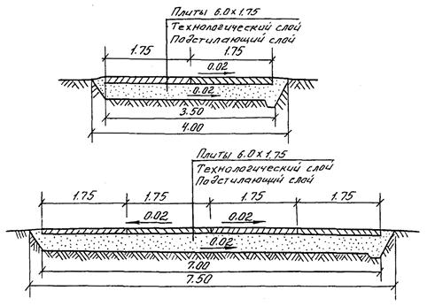
Рис. 3.1.8. Поперечные профили временных дорог с покрытием из плит размером 6,0×1,75 м.
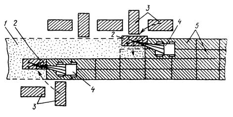
Рис. 3.2.1. Укладка плит двумя кранами в одном потоке:
1 - подготовленное основание; 2 - плиты в момент кладки; 3 - плиты, вывезенные заранее на обочину; 4 - краны, укладывающие плиты; 5 - уложенные плиты.
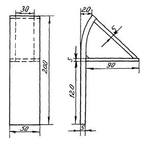
Рис. 3.2.2. Металлический шаблон для контроля ширины швов:
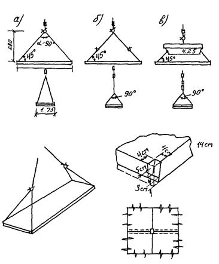
Рис. 3.2.3. Схемы строповки и монтажа покрытия.
а) чалка длиной 10,5 м;
б) чалка длиной 4,4 м и двухветвевой строп;
в) чалка длиной 4,4 м и траверса грузоподъемностью 4 т.
3.2.14. Вибропосадку шестигранных плит производят с помощью вибропосадочной машины. Продолжительность вибропосадки - 30 - 50 сек.
3.2.15. Омоноличивание покрытия из плит, имеющих монтажные петли в углах плит, производят сваркой закладных деталей смежных плит после выравнивания покрытия.
3.2.16. После вибропосадки, выравнивания и омоноличивания покрытия производят заделку швов тиоколовой или резинобитумной мастикой «Изол» - И-2. Состав мастики И-2 в % по весу:
битум БНД-60/90 -33
битум БНД-40/60 -42
резиновая крошка -20
кумароновая смола -5
Швы заполняют на 2/3 высоты цементно-песчаной смесью и на 1/3 высоты - мастикой. Швы перед заполнением должны быть тщательно очищены от пыли и грязи с помощью электрощеток или путем продувки сжатым воздухом.
3.2.17. Мастику И-2 заливают в швы в разогретом состоянии заливщиком швов МБ-16. Перед заливкой швов грани плит грунтуют праймером или 50-процентным раствором битума БНД-60/90.
3.2.18. Сквозные монтажные отверстия в шестигранных плитах заделывают так же, как и швы между плитами.
3.2.19. При строительстве дорог в зимнее время следует подготовить земляное полотно и основание до наступления устойчивых отрицательных температур. В случае, если земляное полотно и основание заранее не подготовлены, их устройство следует производить в зимних условиях в соответствии со СНиП Ш-40-90, ВСН-3-67 и Рекомендациями по строительству городских дорог в зимнее время (НИИМострой, 1991 г.).
3.2.20. При устройстве покрытий в зимнее время плиты укладывают на выравнивающий слой толщиной 5 - 10 см из талого песка, мелкого щебня или других несмерзающихся материалов. Укладка этого слоя на подготовленное основание производится непосредственно перед монтажом покрытия.
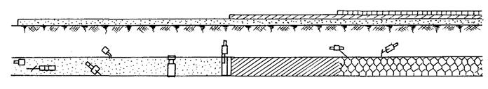
|
№ сменной захв. |
1 |
2 |
3 |
4 |
5 |
|
|
Длина сменной захватки 100 м |
|
|||||
|
Устройство подстилающего слоя |
Устройство основания (цементно-песчаная смесь) |
Монтаж покрытия |
Вибропосадка плит и установка борта |
Заделка швов |
|
|
|
Наименование операций |
1 вариант |
1 вариант |
1. Подвоз плит |
1. Разборка рельс-форм. Установка борта |
1. Расчистка швов электрощеткой или сжатым воздухом от компрессора |
|
|
1.Подвозка песка автосамосвалами |
1. Подвоз сухой смеси |
2. Укладка плит в покрытие |
|
|||
|
2. Разравнивание 1-го слоя песка грейдером или бульдозером |
2. Укладка смеси распределителем |
3. Вибропосадка плит |
|
|||
|
3. Установка рельс-форм. |
3. Планировка и уплотнение смеси профилировщиком |
2. Заделка швов и монтажных отверстий песчано-цементной смесью |
||||
|
4. Послойное разравнивание и уплотнение песка профилировщиком с поливкой водой |
2 вариант |
|||||
|
1. Подвоз сухой смеси автосамосвалами |
3. Заливка швов мастикой |
|||||
|
2 вариант |
2. Укладка смеси укладчиком на гусеничном ходу |
|
||||
|
1.Подвозка песка автосамосвалами |
|
|||||
|
2. Послойное разравнивание песка грейдером или бульдозером и укатка с поливкой водой |
||||||
|
3. Окончательное выравнивание смеси вручную |
||||||
|
||||||
|
Машины и оборудование |
Длина сменной захватки 100 м |
|
||||
|
1 вариант |
1 вариант |
1. Автомашины МАЗ и др. |
1. Трактор ДТ или «Беларусь» с навесным оборудованием - 1 шт. |
1. Электрощетка - 1 шт. или компрессор |
|
|
|
1. Автосамосвалы |
1. Автосамосвалы |
2. Автокран К-104 с вакуум-траверсой или цанговым захватом - 1 шт. |
|
|||
|
2. Автогрейдер - 1 шт. |
2. Распределитель -1 шт. |
2. Агрегат для заливки швов - 1 шт. |
|
|||
|
3. Автокран КС-2561 К-1 или КС-2571А - 1 шт. |
3. Профилировщик - 1 шт. |
2. Автокран КС-2561 К-1 или КС-2571А - 1 шт. |
||||
|
2 вариант |
3. Автомобиль ЗИЛ-130 - 1 шт. |
|||||
|
4. Автомашина для перевозки рельс-форм - 1 шт. |
1. Автосамосвалы |
3. Вибропосадочная машина АМ-66 - 1 шт. |
||||
|
2. Укладчик - 1 шт. |
4. Поливомоечная машина - 1 шт. |
|||||
|
5. Поверхностный вибратор И-101А - 1 шт. |
4. Автомобиль для перевозки рельс-форм - 1 шт. |
|||||
|
6. Поливомоечная машина - 1 шт. |
|
|||||
|
7. Профилировщик - 1 шт. |
|
|||||
|
2 вариант |
|
|||||
|
1. Автосамосвалы - 1 шт. |
|
|||||
|
2. Автогрейдер - 1 шт. |
|
|||||
|
3. Поливомоечная машина - 1 шт. |
|
|||||
|
4. Моторный каток - 1 шт. |
|
|||||
Рис. 3.2.4. Устройство сборного покрытия из шестиугольных плит.
|
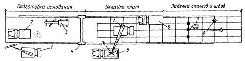 |
|
|||
|
Виды работ |
Установка рельс-форм |
Вывозка плит |
Сварка арматуры в стыках плит и заделка стыковых гнезд бетонной смесью |
|
|
Вывозка песка, обработанного битумом для устройства выравнивающего слоя |
Укладка плит самоходным краном |
|
||
|
Предварительное разравнивание песка автогрейдером |
Вибропосадка плит |
Заливка швов резинобитумной мастикой |
|
|
|
Окончательная планировка и уплотнение выравнивающего слоя профилировочной машиной |
||||
|
Разборка рельс-форм |
||||
|
Средства механизации |
Самоходный кран для установки рельс-форм |
Автомобили для вывозки плит |
Сварочный агрегат |
|
|
Заливщики швов |
||||
|
Автомобили-самосвалы |
Самоходный кран для разгрузки автомобилей и укладки плит |
Самоходный кран (тот же, что и на 1-й захватке) |
|
|
|
Автогрейдер |
|
|||
|
Профилировщик основания |
Вибропосадочная машина |
|
||
Рис. 3.2.5. Технологическая схема устройства сборного покрытия из железобетонных плит:
1 - самоходные краны; 2 - автомобнли-самосвалы; 3 - автогрейдер; 4 - профилировщик основания; 5 - автомобили для вывозки плит; 6 - вибропосадочная машина; 7 - электросварочный агрегат; 8 - заливщик швов.
3.2.21. Работы по устройству покрытия во время сильного снегопада следует приостанавливать. Подготовленные участки выравнивающего слоя следует укрывать передвижными навесами, брезентом или соломенными матами. При температуре наружного воздуха ниже - 15 °С монтаж покрытия производить не рекомендуется.
3.2.22. При устройстве покрытия в зимнее время вибропосадку плит и заделку швов рекомендуется производить весной после стабилизации основания и устранения дефектов и нарушений ровности. В случае необходимости заделки швов зимой следует предварительно подогреть места сопряжения плит и заполнить их на 2/3 высоты подогретой до 35 °С цементно-песчаной смесью и на 1/3 высоты мастикой при t = 200 °С.
3.2.23. Перед устройством выравнивающего слоя поверхность основания тщательно очищают от снега, льда и грязи бульдозером или автогрейдером. Для облегчения удаления льда и снега рекомендуется применять раствор CaCl2 в количестве 1 л/м2.
3.2.24. Технологическая схема устройства сборного покрытия из шестиугольных плит по двум вариантам приведена на рис. 3.2.4:
- с применением профилировщика ДС-178;
- с применением укладчика щебня и гравия СД-406 на гусеничном ходу.
3.2.25. Технологическая схема устройства сборного покрытия из прямоугольных плит представлена на рис. 3.2.5.
4.1.1. Устройство тротуаров, садово-парковых пешеходных дорожек и площадок осуществляют с покрытием из сборных квадратных (К), прямоугольных (П), шестиугольных (Ш), фигурных бетонных плит и элементов мощения (Ф) и элементов декоративных дорожных (ЭДД).
Виды, марки и размеры тротуарных плит согласно ГОСТ 17608-91 представлены в табл. 4.1.1.
Из таблицы видно, что толщина плиты покрытия зависит от вида основания.
На рис. 4.1.1 представлена схема раскладки тротуарных плит, а на рис. 4.1.2 - схема раскладки фигурных элементов мощения.
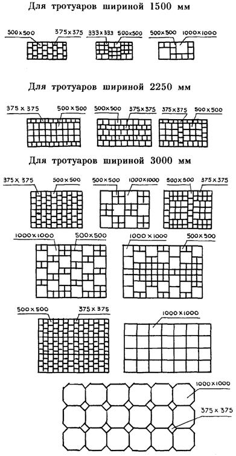
Рис. 4.1.1. Схема раскладки тротуарных плит.
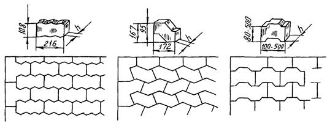
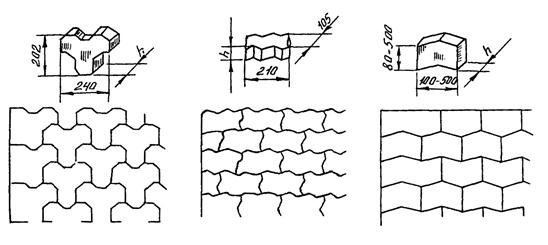
Рис. 4.1.2. Схемы раскладки фигурных элементов мощения.
Виды, марки и размеры тротуарных плит
|
Тип плиты, марка плиты |
Размеры плиты, мм |
|||||||
|
а |
б |
Толщина плиты |
||||||
|
на щебеночных и бетонных основаниях А |
на песчаных и стабилизированных основаниях Б |
в местах заезда тяжелого транспорта на тротуар В |
||||||
|
Квадратные плиты |
||||||||
|
1К.5, 1К.6, 1К.8 |
200 |
- |
50 |
60 |
80 |
|||
|
2К.5, 2К.6, 2К.10 |
250 |
- |
50 |
60 |
100 |
|||
|
3К.5, 3К.6, 3К.10 |
300 |
- |
50 |
60 |
100 |
|||
|
4К.5, 4К.7, 4К.10 |
375 |
- |
50 |
70 |
100 |
|||
|
5К.5, 5К.7, 5К.10 |
400 |
- |
50 |
70 |
100 |
|||
|
6К.5, 6К.7, 6К.10 |
500 |
- |
50 |
70 |
100 |
|||
|
7К.6, 7К.8, 7К.10 |
750 |
- |
60 |
80 |
100 |
|||
|
8К.8, 8К.10 |
1000 |
- |
80 |
100 |
100 |
|||
|
Прямоугольные плиты |
||||||||
|
1П.5, 1П.6, 1П.10 |
375 |
250 |
50 |
60 |
100 |
|||
|
2П.5, 2П.7, 2П.10 |
500 |
250 |
50 |
70 |
100 |
|||
|
3П.5, 3П.7, 3П.10 |
500 |
375 |
50 |
70 |
100 |
|||
|
4П.6, 4П.7, 4П.10 |
750 |
375 |
60 |
70 |
100 |
|||
|
5П.6, 5П.7, 5П.10 |
750 |
500 |
60 |
70 |
100 |
|||
|
6П.8, 6П.10 |
1000 |
500 |
80 |
80 |
100 |
|||
|
Шестиугольные плиты |
||||||||
|
1Ш.5, 1Ш.6, 1Ш.10 |
250 |
432 |
50 |
60 |
100 |
|||
|
2Ш.6, 2Ш.7, 2Ш.10 |
375 |
648 |
50 |
70 |
100 |
|||
|
3Ш.6, 3Ш.8, 3Ш.10 |
500 |
865 |
60 |
80 |
100 |
|||
Примечание. По этому же ГОСТ промышленность изготавливает фигурные плиты и элементы мощения - 1 (Ф) и элементы декоративные дорожные - (ЭДД).
4.1.2. Конструктивные элементы тротуаров:
- песчаный подстилающий слой;
-основания из песка, цементно-песчаной смеси, бетона и щебня;
- покрытие из плит.
Технологическая последовательность работ по строительству сборных покрытий тротуаров включает следующие этапы: рытье и уплотнение корыта, установку бортового камня, устройство подстилающего слоя, устройство основания и покрытия, в том числе заполнение швов.
4.2.1. Плиты доставляют на объект автотранспортом в специальных контейнерах. Погрузо-разгрузочные работы и монтаж покрытия из плит размером сторон 100 см производят при помощи навесного оборудования конструкции СУ-32 треста строительства набережных и мостов Главмосинжстроя к 3 - 5-тонному автокрану или автопогрузчику (рис. 4.2.1.).
Плиты размером сторон до 50 см можно укладывать в покрытия специальным вакуум-захватом круглой формы диаметром 400 мм, весом 7 кг, которым можно поднимать груз до 100 кг. Для обеспечения полного прилегания плит к основанию их окончательная посадка до проектной отметки производится специальным вибратором размером 40×40 см и мощностью двигателя 0,6 кВт, число колебаний - 280 в минуту (рис. 4.2.2.).
Фигурные элементы мощения укладывают вручную или плитоукладчиком.
4.2.2. Укладку плит следует производить поперечными рядами от края до края тротуара. Перед укладкой плит должны быть разбиты и закреплены на основании две ограничивающие линии, от одной из которых начинается укладка плит.
4.2.3. Выравнивание граней плит производят по натянутой проволоке или шнуру, расположенному вдоль укладываемого ряда.
4.2.4. Ширина шва между смежными плитами с размером сторон 100 см должна быть в пределах 8 - 12 мм и с размером стороны до 50 см - в пределах 5 - 8 мм. Швы заполняют цементно-песчаной смесью в соотношении 1 : 3.
4.2.5. При устройстве декоративных покрытий ширину шва можно увеличить до 50 мм. В этом случае шов заполняется дерном или растительным грунтом и засеивается травой. Для обеспечения требуемой ширины швов между плитами применяют специальные шаблоны (рис. 4.2.3.).
4.2.6. При укладке плит с размером стороны 100 см выравнивание их производят при помощи такелажных багров после того, как нижняя плоскость плиты опущена краном на 2 - 3 см ниже верхней плоскости уложенных смежных плит. Какие-либо перекосы плиты недопустимы. При употреблении ломов обламывание кромок плит должно исключаться.
4.2.7. Выравнивание уложенных плит осуществляют легким постукиванием деревянными трамбовками. Уступы в швах смежных плит не должны превышать 2 мм. Образовавшийся у граней плит валик из песка или цементно-песчаной смеси срезают ручным шаблоном.
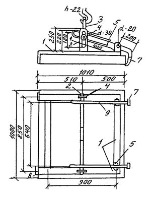
Рис. 4.2.1. Захват для укладки плит:
1 - рама из труб прямоугольного сечения 40×60 мм; 2 - вал траверсы; 3 - скоба; 4 - полоса с вырезом; 5 - несущая траверса; 6 - палец; 7 - полоса размером 100×80×10 мм; 8 - полоса размером 150×100×10 мм; 9 - рычаг.
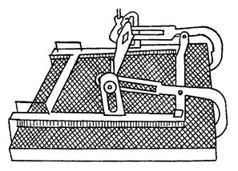
Рис. 4.2.2. Захват для укладки плит со стороной 100 см.
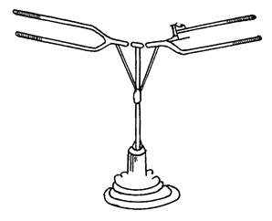
Рис. 4.2.3. Вакуум-захват для укладки плит размером 50×50 см.
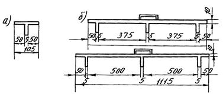
Рис. 4.2.4. Приспособления для контроля ширины швов:
а) - штучный ограничитель; б) - шаблоны.
4.2.8. При устройстве покрытий в зимнее время целесообразно заранее, до наступления заморозков, подготовить земляное полотно, подстилающий слой и основание под покрытие.
4.2.9. При укладке плит на бетонное основание в зимнее время поверхность его должна быть тщательно очищена от грязи, снега и льда и затем прогрета. Для облегчения удаления ледяного покрова рекомендуется оттаивание его раствором CaСl2 из расчета один литр на квадратный метр. Очистку и прогрев бетонного основания можно производить асфальторазогревателем или при помощи установки, применяемой для устройства кровель с наплавляемым рубероидом, а также нагретым до температуры 180 - 200 °С горячим песком, который укладывают слоем толщиной 5 - 7 мм, с последующим его удалением.
4.2.10. По очищенному и подогретому бетонному основанию укладывают выравнивающий слой подогретой до 35 °С цементно-песчаной смеси толщиной до 20 мм.
4.2.11. Работы по устройству тротуаров во время сильного снегопада прекращаются. Подготовленные участки выравнивающего слоя укрываются передвижными навесами, брезентом или соломенными матами. Производить укладку плит при температуре ниже - 15 °С не разрешается.
4.2.12. Заделку швов рекомендуется производить только весной. В случае необходимости заполнения швов зимой следует предварительно подогреть места сопряжении плит и заполнить их подогретой до 35 °С цементно-песчаной смесью.
5.1.1. В Москве бортовые камни, ограничивающие проезжую часть, установлены на магистральных улицах из гранита, а на внутриквартальных дорогах, дворовых территориях, объектах соцкультбыта из бетона и железобетона. Промышленность строительных материалов поставляет в Москву бортовые камни, соответствующие ГОСТ 6666-91 для камней горных пород и ГОСТ 6665-91 для бетонных и железобетонных камней.
5.1.2. На магистральных улицах Москвы устанавливаются гранитные бортовые камни следующих типов: прямоугольные (1ГП, 2ГП, 3ГП, 4ГП, 5ГП, ГПВ), криволинейные (ГК5, ГК8). В табл. 5.1.1. представлены размеры этих камней.
Таблица 5.1.1.
Основные характеристики гранитных бортовых камней
|
Марка |
Тип |
Размеры в мм |
||
|
высота |
ширина |
длина |
||
|
1ГП |
прямые |
300 |
150 |
700 - 2000 |
|
2ГП |
то же |
400 |
180 |
700 - 2000 |
|
3ГП |
- » - |
600 |
200 |
700 - 2000 |
|
4ГП |
- » - |
200 |
100 |
700 - 2000 |
|
5ГП |
- » - |
200 |
80 |
700 - 2000 |
|
ГПВ |
- » - |
200 |
150 |
700 - 2000 |
|
ГК5 |
криволинейные |
300 |
150 |
700 - 2000 |
|
ГК8 |
то же |
300 |
150 |
700 - 2000 |
5.1.3. На внутриквартальных дорогах, дворовых территориях и на объектах соцкультбыта устанавливаются бетонные или железобетонные бортовые камни, которые изготовляются по ГОСТ 6665-91. Основные размеры бетонных и железобетонных бортовых камней, наиболее часто применяемых, представлены в табл. 5.1.2.
|
Марка |
Размеры в мм |
||
|
длина |
высота |
ширина |
|
|
БР 100.30.15 |
1000 |
300 |
150 |
|
БР 300.30.15 |
3000 |
300 |
150 |
|
БР 600.30.15 |
6000 |
300 |
150 |
|
БР 100.30.18 |
1000 |
300 |
180 |
|
БР 300.30.18 |
3000 |
300 |
180 |
|
БР 600.30.18 |
6000 |
300 |
180 |
|
БР 300.45.18 |
3000 |
450 |
180 |
|
БР 600.60.20 |
6000 |
600 |
200 |
|
БР 100.20.8 |
1000 |
200 |
80 |
|
БУ 300.30.32 |
3000 |
300 |
320 |
5.1.4. Отклонения от размеров бортовых камней по длине и высоте не должны превышать + 5 мм.
5.1.5. Внешний вид и качество поверхности бортовых камней должны удовлетворять следующим требованиям:
- искривление лицевой поверхности по длине камня не должно превышать 3 мм на 1 м длины;
- неперпендикулярность боковых (торцевых) и продольных лицевых плоскостей не должна превышать 2 мм;
- трещины на камнях не допускаются.
5.1.6. Бортовые бетонные камни длиной 1 м всех марок и бортовые камни длиной 3 м, высотой 450 и 600 мм должны изготавливаться из бетона без армирования, бортовые камни длиной 3 м, высотой 300 мм - из железобетона, а камни длиной 6 м - из предварительно-напряженного железобетона.
5.1.7. Бортовые камни длиной 3 м должны изготавливаться с уширенным основанием - контрофорсом. Бортовые камни длиной 6 м могут быть изготовлены с лотком и без лотка.
5.2.1. Последовательность работ по установке бортовых камней следующая:
- инструментальная разбивка;
- подготовка земляного полотна;
- подготовка бортовых камней к установке;
- установка опалубки;
- устройство цементобетонного основания;
- установка бортовых камней;
- укладка цементобетона в опалубку;
- заделка и расшивка швов.
При установке длинномерных бортовых камней монолитное цементобетонное основание не устраивается.
Схема установки бортового камня представлена на рис. 5.2.1.
5.2.2. Бортовые камни доставляют на объект в специальных контейнерах (поддонах). Разгрузку и установку камней производят автокраном КС-2561К-1 и погрузчиком ТО-30.
5.2.3. Бортовые камни устанавливаются при помощи машин или, чаще всего, вручную с применением приспособлений, представленных на рис. 5.2.2.
5.2.4. Перед установкой бортовых камней длиной 1 м по тщательно выровненному и уплотненному земляному полотну распределяют песчаный подстилающий слой толщиной 10 см, по которому устраивают бетонное основание толщиной 10 см (подушку). Установку бортовых камней производят по шнуру, натянутому между специальными металлическими штырями на высоте, соответствующей отметке верхней кромки камней.
5.2.5. С двух сторон бортового камня устраивают бетонную обойму высотой 10 см в деревянной или металлической опалубке.
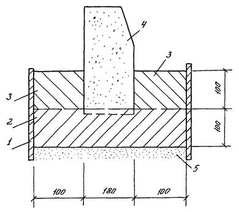
Рис. 5.2.1. Схема установки бортового камня:
1 - опалубка; 2 - бетонное основание под бортовой камень; 3 - участок добетонирования; 4 - бортовой камень; 5 - песчаный подстилающий слой.
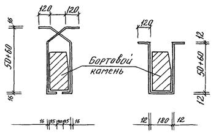
Рис. 5.2.2. Схемы приспособлений для установки бортовых камней.
5.2.6. Длинномерные бортовые камни длиной 3 и 6 м устанавливают непосредственно на песчаное основание или основание дорожной одежды, предусмотренное проектом, под стыками камней укладывают бетонные подкладки. Установку камней производят автокранами грузоподъемностью 3 т или автопогрузчиками (рис. 5.2.3.).
|
Этапы работы |
I |
II |
III |
IV |
|
Машины |
Виброплощадки |
Вручную |
Автокран или автопогрузчик |
Вручную |
|
Схема |
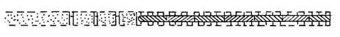 |
|||
|
Последовательность работы |
Устройство песчаного основания |
Укладка бетонных подкладок (40×20×10 см) |
Установка бортового камня |
Омоноличивание стыков |
Рис. 5.2.3. Технологическая схема установки длинномерных бортовых камней.
5.2.7. Бетонные подкладки, укладываемые под стыки длинномерных камней заподлицо с песчаным основанием, изготовляют из бетона М300 размером 40×20×10 см.
5.2.8. Ширина швов между бортовыми камнями не должна превышать 5 мм. Заполнение швов производят цементным раствором состава 1 : 4, после чего расшивают раствором состава 1 : 2. Схема заделки шва между бортовыми камнями представлена на рис. 5.2.4.
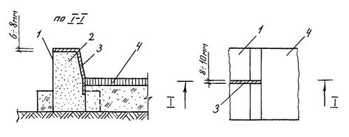
Рис. 5.2.4. Схема заделки шва между бортовыми камнями:
1 - бортовой камень; 2 - цементный раствор состава 1 : 4; 3 - цементный раствор состава 1 : 2; 4 - полотно дороги.
6.1.1. Смотровые колодцы устраивают на проезжей части на реконструируемых и вновь строящихся участках различных подземных коммуникаций, а также при реконструкции дорожных покрытий. Колодцы состоят из рабочей камеры и горловины, служащей для спуска в камеру.
6.1.2. Регулируемые оголовки смотровых колодцев предназначены для установки на проезжей части дорог и обеспечивают надежное положение чугунного люка на верхней части горловины диаметром 700 мм в соответствии с отметкой проезжей части. Оголовок позволяет изменять высотное положение люка поворотом регулировочного кольца оголовка.
6.1.3. Регулируемый оголовок состоит из опорной плиты, имеющей гнездо, на клиновых площадках которого установлено поворотное регулировочное кольцо с обечайкой люка.
6.1.4. Регулируемые оголовки должны изготавливаться из бетона марки не ниже 300 по прочности на сжатие и марки не ниже 40 по прочности на растяжение при изгибе.
6.1.5. Последовательность установки оголовка:
- подготовка и тщательное уплотнение зоны опирания оголовка;
- монтаж опорной плиты по горловине колодца;
- заливка мастикой «Изол» или горячим битумом кольцевого паза между горловиной и опорной плитой;
- установка поворотного кольца;
- заделка кольцевой полости между опорной плитой и поворотным кольцом.
Схема установки оголовка представлена на рис. 6.1.1.
6.2.1. Оголовки смотровых колодцев доставляют на строительные объекты автомобилями с шириной кузова не менее 215 см (МАЗ-205, ЗИЛ-130 и др.). Опорную плиту укладывают в кузов автомобиля срезами вдоль боковых бортов.
6.2.2. Разгрузку и монтаж оголовков производят стреловыми кранами грузоподъемностью 3 - 5 т.
6.2.3. Перед установкой регулируемого оголовка производят засыпку пазух вокруг колодца и горловины песчаным грунтом с тщательным уплотнением. Уплотнение производят вибробулавами, виброплощадками, малогабаритными катками и вибротрамбовочными плитами с поливом водой. Коэффициент уплотнения засыпки должен быть не менее 1,00.
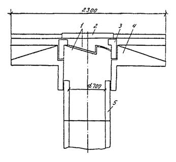
Рис. 6.1.1. Конструкция регулируемого оголовка смотрового колодца:
1 - регулировочное кольцо; 2 - крышка люка; 3 - поворотное кольцо; 4 - опорная плита; 5 - колодец.
6.2.4. Подготовку зоны опирания оголовка вокруг колодца производят с определением отметок по нивелиру. Отклонения ровности подготовленной поверхности основания от проектной не должны быть более 3 мм.
6.2.5. Опорную кольцевую плиту укладывают на основание, по которому распределяют без уплотнения слой песка или цементно-песчаной смеси толщиной 5 - 7 см.
6.2.6. Паз между опорной плитой и рабочей камерой колодца на 2/3 заделывают цементно-песчаной смесью. Верхнюю часть паза на 1/3 его высоты герметизируют мастикой «Изол» - И-2 или горячим битумом.
6.2.7. Поворотное регулировочное кольцо с люком опускают в гнездо опорной плиты в крайнее нижнее положение, что позволяет при ремонтах поднимать люк на высоту до 1200 мм, не изменяя положение опорной плиты. Проверку соответствия отметок люка и верха проезжей части производят нивелиром.
6.2.8. Кольцевой зазор между поворотным кольцом и опорной плитой заделывают мастикой И-2 или лентой изола.
6.2.9. Последовательность операций по регулировке оголовков при реконструкции дороги:
- удаление отбойным молотком слоя асфальтобетона с поверхности и вокруг регулировочного кольца;
- установка поворотного кольца на заданную отметку вращением по часовой стрелке краном или автопогрузчиком.
Длина участков опирания клиновых площадок поворотного кольца на площадки опорной плиты должна быть не менее 100 мм. Проверку соответствия отметок люка и верха дорожного покрытия производят нивелиром.
6.2.10. При устройстве слоев дорожных одежд, расположенных над опорной плитой оголовка, наезд на плиту тяжелых катков запрещается. Уплотнение производят легкими катками весом до 5 т, виброплощадками и вибротрамбовками.
7.1. Выполненные работы принимают, производя освидетельствование работ в натуре, контрольные замеры, при этом проводят проверку результатов производственных и лабораторных испытаний материалов и образцов, записей в журналах производства работ.
7.2. При приемке земляных работ по устройству выемок и насыпей проверяют:
- степень уплотнения грунтов;
- наличие актов на скрытые работы, а также актов, устанавливающих соблюдение проектных требований и качество грунтов в насыпях, в том числе возводимых в зимний период.
7.3. Дорожно-строительная организация должна предъявить следующую техническую документацию для проверки:
- исполнительные чертежи конструктивных элементов дороги;
- журналы производства работ;
- акты освидетельствования скрытых работ и производства геодезической разбивки;
- журнал лабораторного контроля производства работ и акты испытаний строительных материалов и контрольных образцов.
7.4. При приемке скрытых работ оценивают качество работ, устанавливают их соответствие проекту и требованиям строительных норм и правил.
7.5. Акты освидетельствования скрытых работ составляют на выполнение следующих видов работ:
- замены грунтов или осушения основания;
- устройства теплоизоляционных слоев;
- устройства водоотвода и дренажей;
- возведения, уплотнения и подготовки земляного полотна;
- устройства и уплотнения конструктивных слоев дорожной одежды.
7.6. При приемке готового покрытия проверяют:
- соответствие профилей (продольного и поперечного) проекту;
- ширину швов и качество их заделки;
- превышение смежных плит;
- наличие поврежденных плит, имеющих трещины, околы на гранях и углах более допускаемых по техническим условиям.
Поврежденные плиты должны быть заменены.
7.7. Отклонения от проектных размеров при приемке работ по устройству земляного полотна, оснований и покрытий допускаются:
для земляного полотна:
- высотные отметки продольного профиля ± 5 см;
- сужение земляного полотна между осью и бровкой 10 см;
для дополнительных слоев (морозозащитных, дренирующих и др.):
- ширина слоя ± 10 см;
- толщина слоя ± 10 %;
для оснований:
- ширина основания ± 10 см;
- толщина слоя ± 10 %;
- просвет под 3-метровой рейкой ± 10 мм;
для покрытий:
- ширина покрытия ± 5 см;
- просвет под 3-метровой рейкой ± 5мм;
- превышение граней смежных плит сборных покрытий ± 5 мм.
7.8. Насыпи, отсыпаемые зимой, принимают перед возобновлением работ после длительного перерыва, имеющего целью определение их соответствия проекту. Возобновление работ допускается только на основании утвержденного акта.
8.1. При погрузочно-разгрузочных работах, монтаже и демонтаже сборных покрытий, прокладке дренажей необходимо строго соблюдать технические правила производства монтажных работ в соответствии с требованиями норм и правил техники безопасности СНиП III-4-80. Проверка исправности всех монтажных приспособлений и кранов должна быть проведена до начала погрузочно-разгрузочных работ и монтажа покрытия. Рабочие-монтажники должны пройти инструктаж по технике безопасности.
8.2. К работам по строительству полносборных дорожных покрытий допускают рабочих не моложе 18 лет, прошедших специальную подготовку и инструктаж по технике безопасности.
8.3. За соблюдение техники безопасности при строительстве дорог несут ответственность главный инженер строительного управления и производитель работ. Места производства работ должны быть ограждены, для пешеходов строят временные тротуары. С наступлением темноты в зоне работ должны быть установлены сигнальные лампы красного цвета.
8.4. Марка крана, зона работ, условия безопасной работы крана определяются проектом производства работ.
8.5. При монтажных работах по устройству покрытия рабочие должны находиться вне пределов опасной зоны, заключенной внутри крута, радиус которого на 5 м больше вылета стрелы крана. Перемещение стрелы крана с плитой над кабиной автомашины запрещается.
8.6. Канаты (тросы) чалочных приспособлений выбирают в соответствии с ГОСТ 3079-90, ГОСТ 2688-90. Для монтажа плит 6,0×1,75 м применяют одноветвевые стропы (чалки) с диаметром каната 14 мм. Рекомендуемая длина чалок - 10,5 м.
8.7. Для сокращения высоты подъема крана применяют траверсу грузоподъемностью 4 т. В этом случае при наименьшей длине чалок, равной 4,4 м, расстояние между крюками траверсы должно быть 4,25 м.
8.8. Для обеспечения безопасности работ при укладке плит такелажники должны использовать специальные багры длиной 1,5 - 2 м.
8.9. Для обеспечения безопасности хранения плит в штабелях, плиты следует складировать на специально подготовленные для этого площадки у трассы дороги в количестве 7 - 8 штук. Расстояние между штабелями должно быть не менее 0,8 м. Самую нижнюю плиту укладывают на две деревянные подкладки толщиной не менее 6 см и шириной не менее 15 см, последующие плиты укладывают на подкладки толщиной не менее 3 - 4 см.
8.10. Для обеспечения безопасности разворота автомобилей на строящейся дороге следует устраивать специальные временные уширения - площадки или временные съезды. При движении автомобилей задним ходом к месту укладки плит следует обеспечить безопасность движения и подачу сигналов лицам, находящимся на пути движения.
8.11. В зимнее время пути перемещения рабочих должны быть очищены от снега и льда и посыпаны песком. Участки строительства должны быть оборудованы специальными помещениями для обогрева рабочих, отдыха и принятия пищи. Для обогрева рабочих устанавливаются периодические перерывы в работе продолжительностью 10 мин при температуре от - 20 °С до - 30 °С и полное прекращение работ при температуре ниже - 30 °С.
8.12. Категорически запрещается лицам, не имеющим специального удостоверения, управлять механизмами и ремонтировать их. За исправность машин и механизмов несет ответственность начальник участка управления механизации.
8.13. Рабочие должны быть обеспечены специальной одеждой и исправным инструментом в соответствии с действующими нормами.
8.14. Бригада рабочих по устройству сборных покрытий дорог должна иметь необходимый инвентарь и инструменты, указанные в приложении 3.
|
Типы уплотняющих машин |
Степень уплотнения |
Грунты |
|
Вибротрамбовки, смонтированные на кране |
||
|
ПВТ-3 |
0,98 |
несвязные |
|
- » - |
0,95 |
связные |
|
ВТМ-2 |
0,98 |
несвязные |
|
- » - |
0,95 |
связные |
|
Вибротрамбовки самопередвигающиеся |
||
|
ВТ-3 |
0,95 |
несвязные |
|
- » - |
0,90 |
связные |
|
ВТ-4 |
0,90 |
связные |
|
ВТ-5 |
0,90 |
связные |
|
ВТМ-2 |
0,96 |
несвязные |
|
- » - |
0,95 |
связные |
|
СВТ-3МП |
0,96 |
несвязные |
|
- » - |
0,95 |
связные |
|
Электротрамбовки ручные |
||
|
ИЭ-4502 и др. |
0,98 |
несвязные |
|
- » - |
0,95 |
связные |
|
Виброплиты |
||
|
ДУ-90 |
0,98 |
несвязные |
|
ДУ-91 |
0,95 |
связные |
|
Модель, тип, марка |
Максимальная грузоподъемность, т |
Длина основной стрелы, м |
Вылет стрелы, м |
Высота подъема крюка, м |
|
Пневмоколесные |
||||
|
КС-5473 Б |
25 |
10 - 24 |
3,2 - 20 |
4,2 - 23,9 |
|
КС-5363 Д |
36 |
15 - 32,5 |
3,9 - при максимальной грузоподъемности |
16,5 |
|
Автомобильные |
||||
|
КС-2571А-1 |
63 |
7,3 - 10,8 |
3,3 - 9,7 |
11,6 |
|
КС-3577-3 |
14 |
8 - 14 |
3,2 - 13 |
9,5 - 14,5 |
|
КС-35715 |
15 |
8 - 18 |
3 - 18 |
8,5 - 18 |
|
КС-4579 |
16 |
9,7 - 21,7 |
2,8 - 18 |
21,7 |
|
Гусеничные |
||||
|
КС-3671 |
14 |
8 - 14 |
3,2 - 13 |
8,5 - 14 |
|
№ пп. |
Наименование |
Единица измерения |
Количество |
|
1. |
Передвижной фургон - бытовка |
шт. |
1 |
|
2. |
Ограждения металлические или деревянные |
- » - |
12 |
|
3. |
Предупредительные дорожные знаки |
- » - |
6 |
|
4. |
Аптечка |
- » - |
1 |
|
5. |
Переносной светильник |
- » - |
4 |
|
6. |
Рейка трехметровая (дюралюминиевая) |
- » - |
2 |
|
7. |
Металлический шаблон для обеспечения требуемой ширины швов в покрытии |
- » - |
4 |
|
8. |
Багор такелажный |
- » - |
4 |
|
9. |
Лопаты совковые с ручками |
- » - |
5 |
|
10. |
Лопаты штыковые с ручками |
- » - |
8 |
|
11. |
Ломы |
- » - |
3 |
|
12. |
Визирки дюралюминиевые |
компл. |
2 |
|
13. |
Рулетка 10-метровая |
шт. |
2 |
|
14. |
Уровень дюралюминиевый |
- » - |
2 |
|
15. |
Метр металлический |
- » - |
2 |
|
16. |
Затирка |
- » - |
2 |
ЛИТЕРАТУРА.
1. ГОСТ 21924.0-84 - ГОСТ 21424.3-84. «Плиты железобетонные для покрытий городских дорог. Технические условия. Конструкции и размеры».
2. ГОСТ 17608-91. «Плиты бетонные тротуарные».
3. ГОСТ 6665-91. «Камни бортовые бетонные и железобетонные. Технические условия».
4. СНиП III-60-90. Планировка и застройка городов и сельских населенных пунктов. Нормы проектирования.
5. СНиП III-40-90. Автомобильные дороги. Правила производства и приемки работ.
6. СНиП III-4-80*. «Техника безопасности в строительстве».
7. Альбом СП 6101-85. «Конструкции дорожных одежд для г. Москвы». Мосинжпроект, НИИМосстрой.
8. «Указания по технологии строительства городских дорог в зимнее время», ВСН-3-67. НИИМосстрой.
9. «Рекомендации по строительству городских дорог в зимнее время», 1991 г., НИИМосстрой.
10. Дубровин Е. Н., Старостин Ю. В. Жесткие покрытия городских улиц. Стройиздат, М., 1979 г.
11. Инструкция по строительству полносборных городских дорог (ВСН-50-79), Главмосинжстрой.
12. Гольдин В. М., Дубровин Е. Н. Технология строительства городских улиц. «Высшая школа», М., 1974 г.
СОДЕРЖАНИЕ